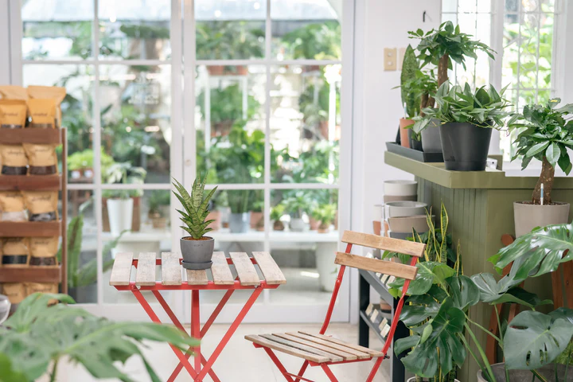

Welcome to Dahon
Welcome to Dahon, our floral paradise where passion and nature collide! We are dedicated to developing a rich assortment of plant goods that bring nature's tranquility and beauty into your home.
We meticulously cultivate each plant with a commitment to sustainability, delivering not only products but also a green lifestyle. Join us on this green journey and let nature grow in your home.
We have a wide selection to choose from whether you're a seasoned plant lover or just starting to explore the world of houseplants.
Taking care of your plants should be as easy and enjoyable as possible, and we're here to provide you with everything you need to keep your plants healthy and thriving.